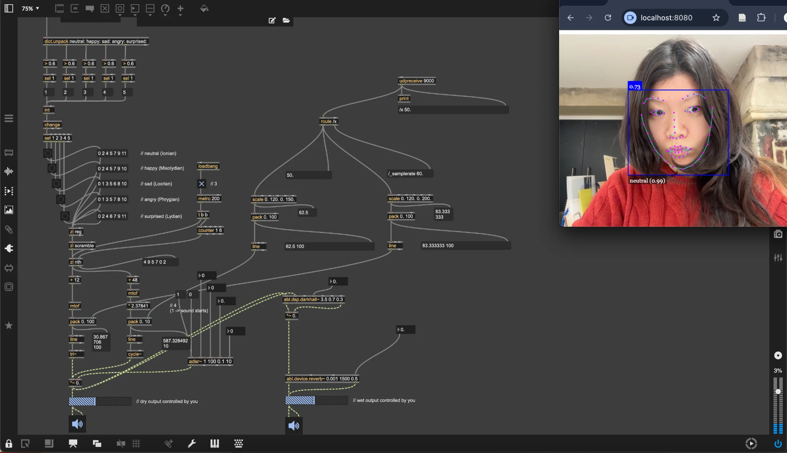
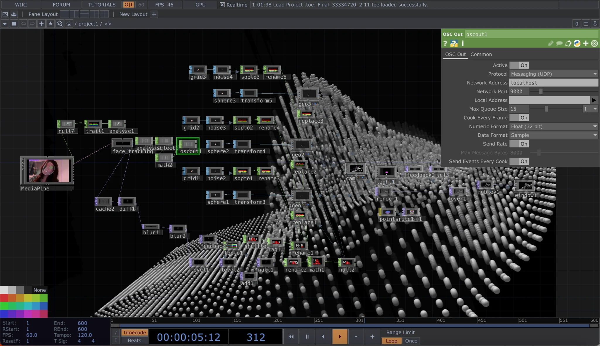
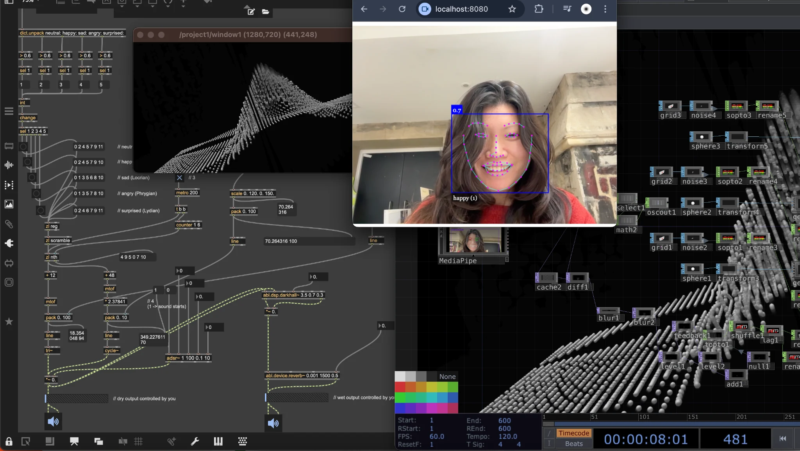
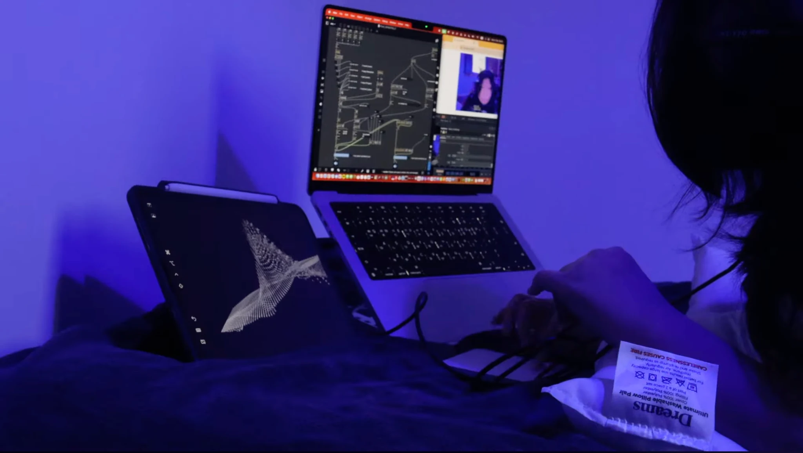

Read My Face Out Loud
Abstract
This creative project explores a reciprocal relationship formed through facial emotion and its data interpretation, switching between different musical modes, with notes randomly sequenced within each mode, and using facial location to affect step size. The system is developed using Max/MSP and TouchDesigner and implemented through a facial emotion recognition API.
Introduction
What do we face most often by showing our faces? Mobile phones, laptops, and other camera-equipped devices collect vast amounts of information in daily life, and human emotions are inferred from this exposure through facial expressions. Read My Face Out Loud, And We Resonate allows the performer to read their face as data, then receive feedback from the system in return, similar to other forms of information exchange. The performer and the system respond to each other continuously. This project examines the relationship between machines and humans, and how this relationship resonates through sonic and visual representations of information.
Contextualisation
The relationship between facial representation and emotional expression has a history of over a hundred years of research (Kostić & Chadee ed., 2015:3), and external APIs commonly categorise primary emotions such as happiness, sadness, fear, anger, surprise, and disgust (Buck & Millar, 2015:173). As the human vocal range can express emotion from sigh to scream, each musical mode is linked to an emotion recognition based on my subjective association of colour and mode. Emotion remains subjective beyond the full comprehension of objective science (ibid:174), and the sound of musical modes is similarly subjective.
In this system, facial data is sent to Max/MSP for sonic response and to TouchDesigner for abstract visual mirroring. The performer sends and receives facial expression data visually through the right brain and auditory responses through the left brain (Givens, 2015:19-20). Through OSC routing, humans and machines exchange data continuously, responding to each other via feedback and information flow.
Creative Methodology
Max/MSP enables the use of Node.js to run a facial emotion recognition API on a local host. Each musical mode, represented as MIDI note sets, is triggered in real time depending on detected facial emotions. The octave and reverb wet/dry values can be adjusted by the performer, allowing direct responses to sonic output. TouchDesigner sends facial X-axis data from MediaPipe, which affects step size through OSC, resulting in subtle variations in pitch and rhythmic changes.

Visually, TouchDesigner processes facial cache data and calculates differences between frames. This feedback visualises how and where the face has moved, forming wave-like structures through sphere instancing and camera angle change. Together, these processes enrich latency and feedback across systems: human to machine, machine to human, auditory to visual, and visual to auditory, in experimental ways.


Conclusion & Reflection
Read My Face Out Loud, And We Resonate, through its patches and live practices, validates the expressive potential of simple monophonic sounds triggered by real-time facial responses. The subject can intentionally change facial expressions to influence sonic outcomes and their alignment. Visually, the system stops responding when the subject moves outside the camera’s view, requiring sustained physical awareness to maintain visual continuity. Unconsciously, facial expressions change even without deliberate intention, yet their interpretation remains limited in fully matching internal emotional states. This gap encourages the subject to enact and exaggerate facial expressions by listening closely to sonic feedback.

In future developments, I would like to expand this project into a larger scale performance involving social media content, where a performer scrolls through information while a mobile camera captures facial reactions. Machine feedback could render unconscious human responses more visible, leaving ambiguity over whether the human or the machine is in control. Additionally, I aim to develop a custom machine learning model to achieve more nuanced facial data recognition. Moreover, I would like to become as comfortable working with Max/MSP as I currently am with TouchDesigner.
References
Buck, R. & Miller, M. (2015) Beyond facial expression: Spatial distance as a factor in the communication of discrete emotions. In: Kostić, A. & Chadee, D. (eds.) The Social Psychology of Nonverbal Communication. London: Palgrave Macmillan, pp. 173-197.
Cipriani, A. & Giri, M. (2010) Electronic Music and Sound Design: Theory and Practice with Max/MSP. Volume 1. Rome: ConTempoNet.
fdb (2020) max-face-api. Available at: https://github.com/fdb/max-face-api (Accessed: 15 Jan 2026)
Givens, D.B. (2015) Nonverbal neurology: How the brain encodes and decodes wordless signs, signals, and cues. In: Kostić, A. & Chadee, D. (eds.) The Social Psychology of Nonverbal Communication. London: Palgrave Macmillan, pp. 9-30.
Kostić, A. & Chadee, D. (eds.) (2015) The Social Psychology of Nonverbal Communication. London: Palgrave Macmillan.